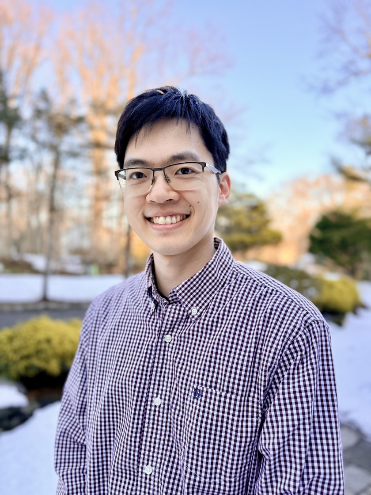
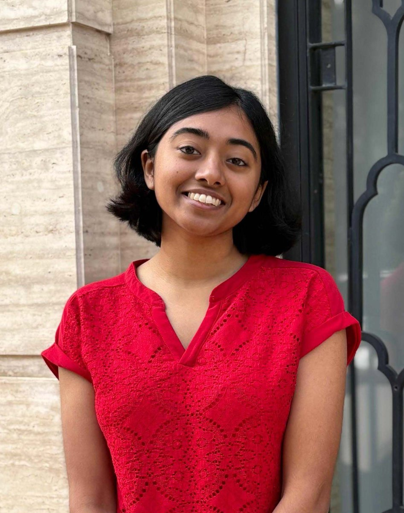
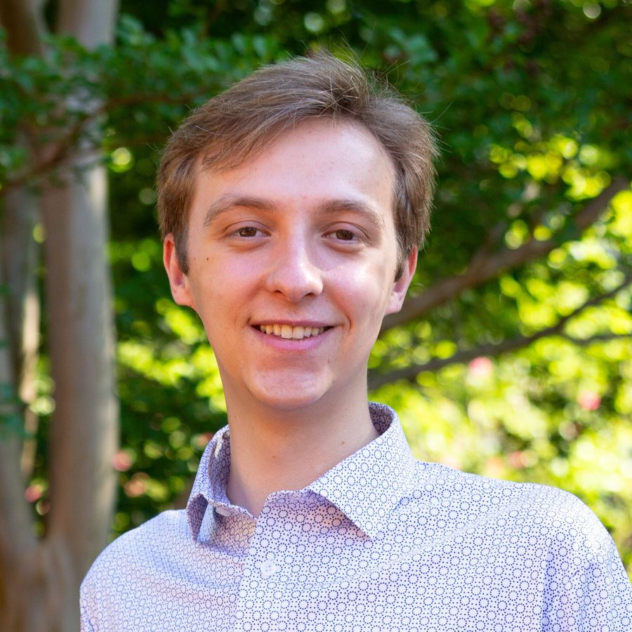
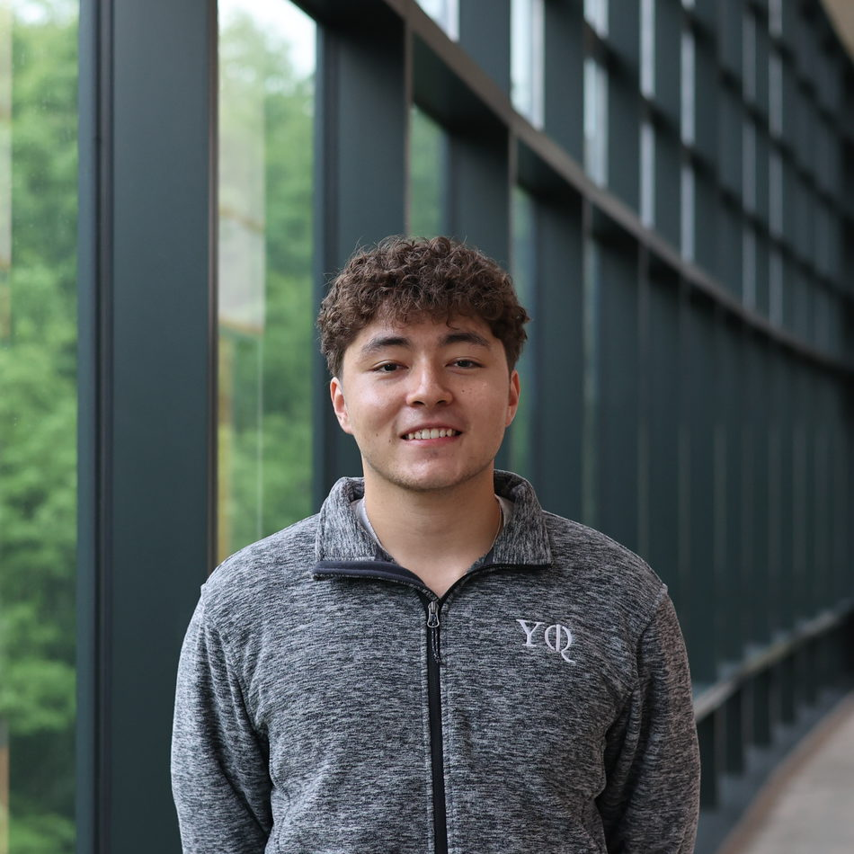
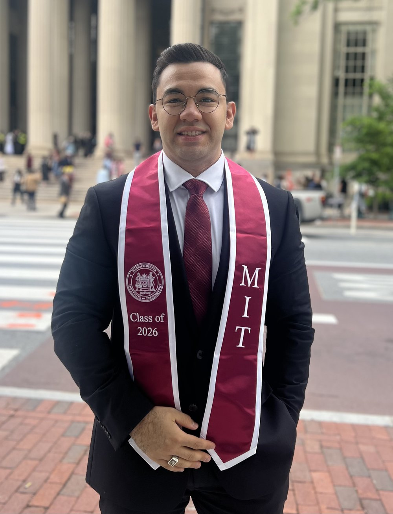

People
Principal Investigator
|
 PC: Grace Zhang |
Hengyun (Harry) Zhou Harry received his BS from MIT and his PhD from Harvard University, and previously served as Quantum Error Correction Architecture Lead at QuEra Computing. His research focuses on accelerating the development of large-scale, fault-tolerant quantum computers through full-stack architectural innovation. He works across quantum error correction, algorithms and compilation, and hardware architecture, developing hardware-efficient fault-tolerant schemes that significantly reduce the space-time overhead required for scalable quantum systems. During his PhD, he also made key contributions to quantum sensing and many-body physics, and was named a finalist for the American Physical Society's Deborah Jin Thesis Prize. Email: hy[last name][@]mit.edu Anonymous feedback: anonymous feedback form |
Current Team
|
 |
Kaavya Sahay Kaavya grew up in Ahmedabad, India. She obtained a B.Tech in Engineering Physics with a minor in computer science from IIT Delhi, and she is currently a final-year PhD student in Applied Physics at Yale, where she works with Shruti Puri. Her graduate research focuses on quantum error correction, including unconventional methods of logical computation with surface codes that account for hardware-aware noise models, measurement-based computation strategies, and nonlocality as a resource. She has also developed tailored decoders for LDPC code families. |
|
 |
Nathan Constantinides Nathan is a physics PhD student in quantum information theory. Prior to MIT, he obtained dual bachelor's degrees in physics and computer science from the University of Maryland, College Park, advised by Professors Gorshkov and Childs. Nathan is interested in the intersection of quantum error correction, compilation, and quantum simulation algorithms. |
|
 |
Shaun Pexton Shaun grew up in Hong Kong, Singapore, and the UK. He received his B.S. in Applied Physics and Computer Science from Yale University, where he was awarded the Josiah Willard Gibbs Prize and the Applied Physics Prize. His research spans quantum error correction, fault-tolerant architectures, and device physics. At Yale he worked with Aleksander Kubica and Yongshan Ding, and held research positions at Quantum Motion in Oxford and ASML in Wilton. He is particularly interested in questions at the interface of theory and experiment in quantum computing. |
Xicheng (Tristan) Wang Tristan grew up in Jiangsu, China. He obtained a B.S. in Mathematics and Physics from Tsinghua University in Beijing, and he is currently a graduate student in the MIT Department of Physics. His research lies at the intersection of quantum many-body physics and quantum information, with an emphasis on how ideas from the two fields inspire one another. He is also interested in concrete architectures for quantum computers and collaborations with experimental groups. Outside of research, he enjoys sports, movies, and traveling. |
|
 |
M. Subhi Abo Rdan Subhi is an MEng student at the Massachusetts Institute of Technology (MIT), where he also completed his undergraduate degrees in Physics and Computer Science. His interests lie at the intersection of quantum information science, high-performance computing, and FPGA/GPU acceleration. His current research focuses on real-time reinforcement learning on FPGAs for quantum control and hardware acceleration of quantum error-correction decoders. Previously, he worked on FPGA systems for high-frequency trading at Optiver, FPGA prototyping at Apple, and FPGA-accelerated scientific computing at the MIT STAR Lab. |
 |
Kuro Usually in a superposition of nap and zoomies. |
 |
You? |